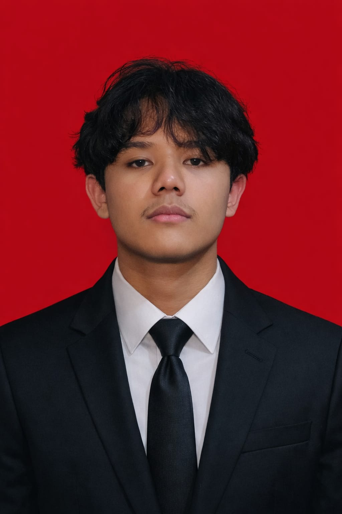

Profile

About Me
Farid is an Informatics student at UIN Sunan Gunung Djati Bandung with a strong interest in technology and software development. His interests include artificial intelligence and machine learning, networking, databases, Linux, and cybersecurity. He develops his skills through academic projects and personal experiments, with a learning approach centered on hands-on practice, problem-solving, troubleshooting, and understanding how systems work under the hood. Currently, he is exploring different areas of Informatics to determine his future specialization while continuously expanding his technical knowledge and experience.
Academic
Current Semester Courses
| No | Course | Professor |
|---|---|---|
| 1 | 20100470501024 - Manajemen Basis Data - SMT 5 | - Wildan Budiawan Zulfikar S.T., M.Kom. |
| 2 | 20100470501026 - Jaringan Komputer - SMT 5 | - Cecep Nurul Alam M.T. |
| 3 | 20100470501028 - Pengembangan Aplikasi Mobile - SMT 5 | - H. Aldy Rialdy Atmadja M.T |
| 4 | 20100470501030 - Pengembangan Aplikasi Web - SMT 5 | - Muhammad Deden Firdaus ST, M.Kom |
| 5 | 20100470501032 - Interaksi Manusia dan Komputer - SMT 5 | - Dr. Cepy Slamet S.T., M.Kom. |
| 6 | 20100470501033 - Intelegensia Buatan - SMT 5 | - Jumadi ST., M.Cs. |
| 7 | 20100470501034 - Manajemen Proyek Perangkat Lunak - SMT 5 | - Agung Wahana S.E., M.T. |